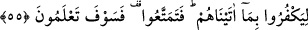

55. Kendilerine verdiklerimize karşılık nankörlük etmeleri için (öyle yaparlar). O
halde bir süre daha faydalanın; fakat yakında hakîkati bileceksiniz!
“Kendilerine verdiklerimize” yâni üzerlerinden musibetin kaldırılması nîmetine
“karşılık” Allah’tan başkasına kulluk etmek sûretiyle “nankörlük etmeleri için” öyle
yaparlar. Sanki Allah’a ortak koşma konusundaki arzu ve isteklerini, nîmete nankörlük
olarak yaparlar.
“O halde bir süre daha faydalanın;” geri kalan ömrünüzde, az bir müddet dünyâ
hayâtının nîmetleriyle faydalanın, yaşayın. Bu bir tehdid emridir “fakat yakında
hakîkati” işinizin sonucunu ve başınıza inecek azabı “bileceksiniz!”
Bu âyetlerdeki işâretlerden birisi şudur: İnsanların çoğu Allah’ın yanında başka bir
ilah edinirler ki, o da hevâ/nefsânî arzulardır. Hevâ, aklî ve naklî bir delil olmadan
sâdece nefsin arzu etmesiyle tab‘ın meylettiği ve nefsin istediği şeydir. Allah Teâlâ:
“Hevâ ve hevesini ilah edineni gördün mü?” (el-Câsiye, 45/23). buyurmuştur. Bu
yüzden “İki ilah edinmeyin!” buyurmuş, “ilahlar” buyurmamıştır. Çünkü Allah’tan
başkasına ancak hevâ ve heves ile ibâdet edilir. Bu sebeple Hz. Peygamber (s.a.):
“Hevâdan daha fazla Allah’ın gazabına sebeb olan bir ilaha ibâdet
edilmemiştir.”[155] buyurmuştur. Sonra Allah Teâlâ: “O ancak bir ilahtır.” buyuruyor.
Yâni hevâyı ve diğer ilahları yaratan O’dur. “O halde yalnız benden korkun!”
Kendisine rağbet edilmeyi ve kendisinden korkmayı hak eden hevâ ve ilahlar değil
ancak Benim. Çünkü onların ne fayda ve ne de zarar vermeye güçleri yoktur.
Allah dostlarından biri şöyle bir olay anlatır: “Bir deniz yolculuğunda idik ve
gemimiz parçalanmıştı. Ben ve zevcem bir tahta üzerinde kalakalmıştık. O anda zevcem
doğum yaptı ve bana:
“Susuzluktan ölüyorum.” dedi. Ben:
“Allah hâlimizi görüyor.” dedim. Başımı kaldırdım, bir de ne göreyim havada oturan
bir adam, elinde altın zincirli kırmızı yakuttan bir testi. Adam:
“Buyur, iç” dedi. Testiyi aldım ve berâber içtik. Kokusu miskten daha güzel, kardan
daha soğuk, baldan daha tatlıydı. Ona:
“Allah sana rahmet etsin, sen kimsin?” dedim.
“Senin Mevlâ’nın bir kuluyum.” dedi.
“Bu mertebeye ne ile ulaştın?” diye sordum.
“O’nun rızası için hevâyı terk ettim.” dedi. Beni havaya oturttu, sonra da kayboldu.
Bir daha onu görmedim.”